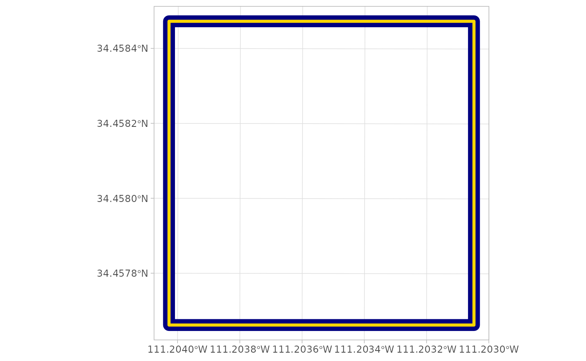
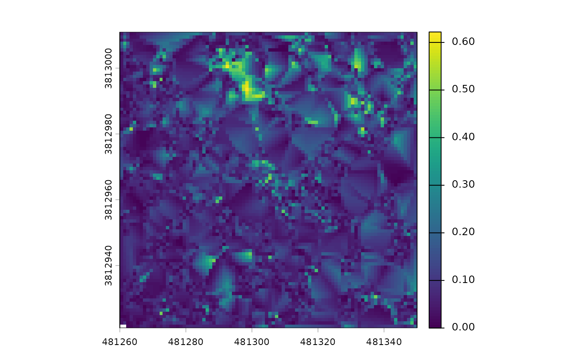
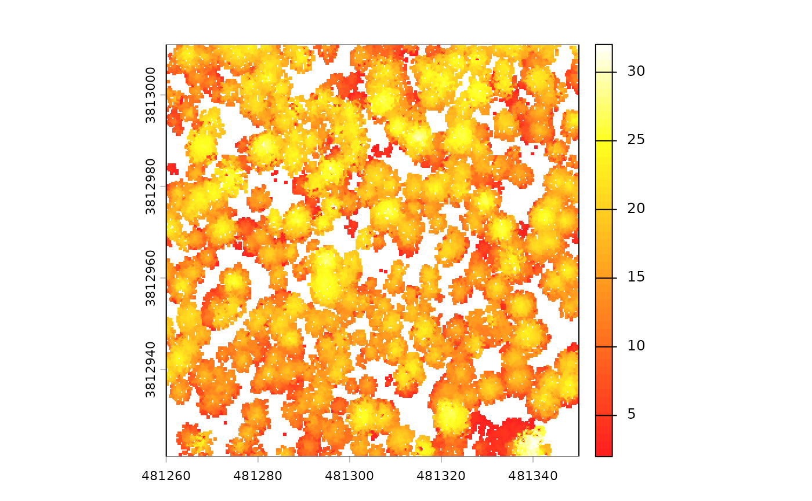
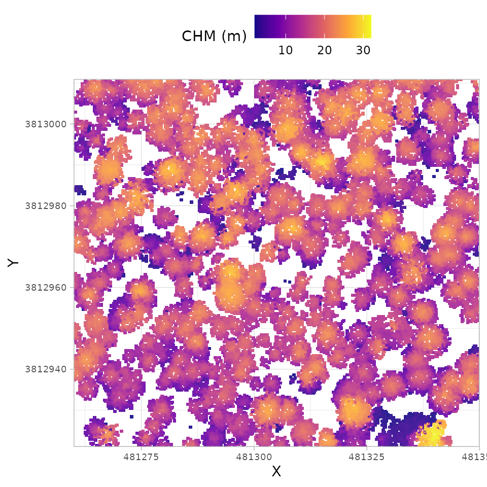
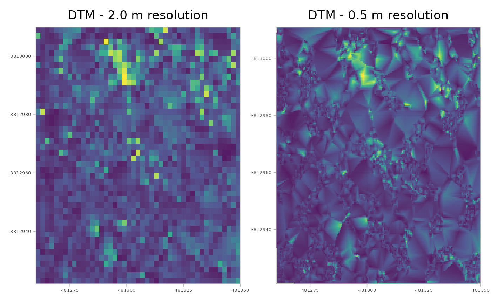

Creating DTM and CHM rasters
Source:vignettes/articles/cloud2raster-tutorial.Rmd
cloud2raster-tutorial.RmdThe cloud2trees package was designed so that complex point cloud
processing could be run progressively, allowing users to achieve
specific tasks in the overall workflow of generating tree-level forest
inventory attributes. The first critical task in this process is
generating the foundational raster products: the Digital Terrain Model
(DTM) and the Canopy Height Model (CHM), which are considered
first-order derivatives coming directly from the point cloud. This
tutorial focuses on the dedicated cloud2raster() function,
which efficiently packages all the essential, customizable steps for
surface generation. For users seeking end-to-end processing, these same
parameters are also accessible through the main
cloud2trees() function which is demonstrated here.
The cloud2raster() function executes a defined sequence
of operations, beginning with tiling the point cloud to manage memory
(if necessary). This is followed by sequential operations, including
ground classification and outlier removal, leading to DTM creation via
ground point triangulation and rasterization. Height normalization of
the point cloud and subsequent creation of the CHM based on the highest
point per pixel. The process concludes with pit and spike filling and
smoothing of the final raster. Understanding and customizing these
parameters grants fine-grained influence over surface generation, with
the CHM directly influencing the reliability of subsequent Individual
Tree Detection (ITD) steps.
Let’s load the libraries we’ll use
library(cloud2trees)
library(ggplot2)
library(magrittr)
library(terra)
library(sf)
library(patchwork)Extract Raster Data from Point Cloud: Defaults
We’ll begin by using a small point cloud dataset that ships with the
lidR package for processing (we previously used this data
in the package overview
demonstration. The cloud2raster() function requires the
input_las_dir argument to be the path to a single point
cloud file (.las or .laz) or a directory containing
these files. If a directory is utilized, the function treats the
directory and all sub-directories as a single point cloud catalog,
processing all contained files together. Therefore, ensure that the
specified directory contains only the point cloud data intended for a
single processing area, as the function recursively processes all files
within its path.
We also need to define where outputs should be written in the
output_dir argument. For demonstration we’ll use a
temporary directory but you’ll likely want to point to a permanent
directory, for example: C:/Data/MixedConifer.
# the path to a single .las|.laz file
# -or- the directory to a folder with many .las|.laz files
las_dir <- system.file(package = "lidR", "extdata", "MixedConifer.laz")
# output directroy
out_dir <- tempdir()First, we’ll run cloud2raster() with all of the default
settings
cloud2raster_ans <- cloud2trees::cloud2raster(
input_las_dir = las_dir
, output_dir = out_dir
)You will see a progress bar giving updates about what the process is doing.
Now, let’s explore what cloud2raster() created
cloud2raster_ans %>% names()
#> [1] "dtm_rast" "chm_rast"
#> [3] "create_project_structure_ans" "chunk_las_catalog_ans"
#> [5] "normalize_flist"The above command should show you a list of five objects that the
output contains. The dtm_rast and chm_rast
contain the main raster outputs, but some users might care about the
other three objects. The normalize_flist contains a list of
the height normalized point cloud tiles,
chunk_las_catalog_ans is a ggplot object for creating a
plot that displays the dataset’s tiles, and the
create_project_structure_ans is a table listing all of the
data source locations and output file locations.
cloud2raster() also wrote data to the disk at the
location defined in the output_dir argument for use outside
of the current working session. The process creates a sub-folder
containing the outputs which is always titled
point_cloud_processing_delivery. If you run this process
multiple times using the same output_dir location, then
everything in the point_cloud_processing_delivery directory
will be overwritten. As such, if you intend to perform multiple
iterations of the processing in the same output_dir
location it is recommended you rename the
point_cloud_processing_delivery directory before running the
next iteration.
Let’s see what was written to the disk.
file.path(out_dir, "point_cloud_processing_delivery") %>%
list.files()
#> [1] "chm_0.25m.tif" "dtm_1m.tif" "raw_las_ctg_info.gpkg"There is a .tif file for both the DTM and CHM raster which includes the resolution of the data in the file name.
There is also a raw_las_ctg_info.gpkg file which includes
the processing extent covered by the point cloud data as a spatial
polygon. This data can be used to ensure the point cloud covered your
intended area of interest or to calculate area-based metrics by properly
representing the area covered by the data. This spatial extent is the
same as the chunk_las_catalog_ans$process_data return from
the cloud2raster() function.
file.path(out_dir, "point_cloud_processing_delivery", "raw_las_ctg_info.gpkg") %>%
sf::st_read(quiet = T) %>%
ggplot2::ggplot() +
ggplot2::geom_sf(fill = NA, color = "navy", lwd = 5) +
ggplot2::geom_sf(
data = cloud2raster_ans$chunk_las_catalog_ans$process_data
, fill = NA, color = "gold", lwd = 1.3
) +
ggplot2::theme_light()
Let’s look at the digital terrain model (DTM) raster
# there's a DTM
cloud2raster_ans$dtm_rast
#> class : SpatRaster
#> size : 90, 90, 1 (nrow, ncol, nlyr)
#> resolution : 1, 1 (x, y)
#> extent : 481260, 481350, 3812921, 3813011 (xmin, xmax, ymin, ymax)
#> coord. ref. : NAD83 / UTM zone 12N (EPSG:26912)
#> source : dtm_1m.tif
#> name : 1_dtm_1m
#> min value : 0.000000
#> max value : 0.622001The DTM was created at the cloud2raster() default 1 m
resolution and that the elevations vary between 0.00 and 0.62 m.
we can plot the DTM using terra::plot()
terra::plot(cloud2raster_ans$dtm_rast)
While the plot shows a fair amount of variation, let’s remember it only represents 0.62 m of vertical relief. If we looked at an area with 60 m of vertical relief, for example, we would not even notice these small fluctuations.
There is also a canopy height model (CHM) raster
# there's a CHM
cloud2raster_ans$chm_rast
#> class : SpatRaster
#> size : 360, 360, 1 (nrow, ncol, nlyr)
#> resolution : 0.25, 0.25 (x, y)
#> extent : 481260, 481350, 3812921, 3813011 (xmin, xmax, ymin, ymax)
#> coord. ref. : NAD83 / UTM zone 12N (EPSG:26912)
#> source : chm_0.25m.tif
#> name : focal_mean
#> min value : 2.01
#> max value : 32.02The CHM was created at the cloud2raster() default 0.25 m
resolution and that the elevations vary between 2.01 and 32.02 m.
we can plot the CHM using terra::plot()
terra::plot(cloud2raster_ans$chm_rast, col = grDevices::heat.colors(55, alpha = 0.88))
We can also plot this raster data using the ggplot2
package which provides a vast collection of customization for plotting.
Here, we’ll use a different color palette than we used with
terra::plot() above to demonstrate, but the same
grDevices::heat.colors color palette could be used if
desired.
cloud2raster_ans$chm_rast %>%
terra::as.data.frame(xy=T) %>%
dplyr::rename(f=3) %>%
ggplot2::ggplot() +
ggplot2::geom_tile(
mapping = ggplot2::aes(x=x, y=y, fill=f)
, alpha = 0.9
) +
ggplot2::scale_fill_viridis_c(option = "plasma") +
ggplot2::scale_x_continuous(expand = c(0, 0)) +
ggplot2::scale_y_continuous(expand = c(0, 0)) +
ggplot2::labs(x = "X", y = "Y", fill = "CHM (m)") +
ggplot2::theme_light() +
ggplot2::theme(
legend.position = "top"
, axis.text = ggplot2::element_text(size = 7)
)
If we really like this figure and want to share it, we can write it out to an image file
Customizing DTM Generation
The cloud2raster() function offers two key arguments
that influence the DTM’s role in the pipeline and the quality of the
final raster products. The straightforward argument is
dtm_res_m, which controls the final output resolution of
the rasterized DTM. The second argument, accuracy_level,
requires more context. In processing the point cloud,
cloud2raster() always first generates continuous DTM by
creating a Delaunay triangulation (or “meshed DTM”) of the ground
classified points. This continuous model and the separate rasterized DTM
are both generated independent of the accuracy_level
setting.
The accuracy_level argument does not affect DTM
creation, it determines which DTM product is used to height-normalize
the non-ground points for subsequent CHM generation. If
accuracy_level is set to ‘1’, the DTM at the resolution
defined by the dtm_res_m argument is used for
normalization, meaning the chosen dtm_res_m will impact the
final CHM quality. However, if accuracy_level is set to ‘2’
or ‘3’, the higher-fidelity triangulated DTM is used for normalization,
and the dtm_res_m setting has no impact on the CHM quality.
Using higher values (‘2’ or ‘3’) for the accuracy_level
argument results in longer processing times, however testing has shown
limited differences in the CHM output between level ‘2’ and ‘3’.
We will create DTM at 2 m and 0.5 m resolutions and look at the differences
First, the 2 m DTM
# 2 m dtm
cloud2raster_ans_dtm_2m <- cloud2trees::cloud2raster(
input_las_dir = las_dir
, output_dir = out_dir
, dtm_res_m = 2.0
)We can confirm that we got the resolution expected by checking the resolution in the X and Y horizontal
# 2 m dtm
paste0(
"The resolution of `cloud2raster_ans_dtm_2m` is: "
, paste( terra::res(cloud2raster_ans_dtm_2m$dtm_rast), collapse = "x")
)
#> [1] "The resolution of `cloud2raster_ans_dtm_2m` is: 2x2"Let’s plot the DTM raster and store it. We won’t show it here as
we’ll combine later using patchwork
# plt_dtm_2m
plt_dtm_2m <- cloud2raster_ans_dtm_2m$dtm_rast %>%
terra::as.data.frame(xy=T) %>%
dplyr::rename(f=3) %>%
ggplot2::ggplot() +
ggplot2::geom_tile(
mapping = ggplot2::aes(x=x, y=y, fill=f)
, alpha = 0.9
) +
ggplot2::scale_fill_viridis_c(option = "viridis") +
ggplot2::scale_x_continuous(expand = c(0, 0)) +
ggplot2::scale_y_continuous(expand = c(0, 0)) +
ggplot2::labs(fill = "Elevation (m)", title = "DTM - 2.0 m resolution") +
ggplot2::theme_light() +
ggplot2::theme(
legend.position = "none"
, axis.text = ggplot2::element_text(size = 5)
, axis.title = ggplot2::element_blank()
, plot.title = ggplot2::element_text(hjust = 0.5)
)Second, the 0.5 m DTM
# 0.5 m dtm
cloud2raster_ans_dtm_0.5m <- cloud2trees::cloud2raster(
input_las_dir = las_dir
, output_dir = out_dir
, dtm_res_m = 0.5
)We can confirm that we got the resolution expected by checking the resolution in the X and Y horizontal
# 0.5 m dtm
paste0(
"The resolution of `cloud2raster_ans_dtm_0.5m` is: "
, paste( terra::res(cloud2raster_ans_dtm_0.5m$dtm_rast), collapse = "x")
)
#> [1] "The resolution of `cloud2raster_ans_dtm_0.5m` is: 0.5x0.5"Let’s plot the DTM raster and store it. We won’t show it here as
we’ll combine later using patchwork
# plt_dtm_0.5m
plt_dtm_0.5m <- cloud2raster_ans_dtm_0.5m$dtm_rast %>%
terra::as.data.frame(xy=T) %>%
dplyr::rename(f=3) %>%
ggplot2::ggplot() +
ggplot2::geom_tile(
mapping = ggplot2::aes(x=x, y=y, fill=f)
, alpha = 0.9
) +
ggplot2::scale_fill_viridis_c(option = "viridis") +
ggplot2::scale_x_continuous(expand = c(0, 0)) +
ggplot2::scale_y_continuous(expand = c(0, 0)) +
ggplot2::labs(fill = "Elevation (m)", title = "DTM - 0.5 m resolution") +
ggplot2::theme_light() +
ggplot2::theme(
legend.position = "none"
, axis.text = ggplot2::element_text(size = 5)
, axis.title = ggplot2::element_blank()
, plot.title = ggplot2::element_text(hjust = 0.5)
)combine with patchwork::wrap_plots()
# patchwork
patchwork::wrap_plots(plt_dtm_2m, plt_dtm_0.5m)
Visually it seems that the 0.5 m resolution has a smoother appearance than the 2.0 m resolution, but it is important to consider the trade-offs as the 0.5 m resolution data contains 16 times as much data.
To maximize flexibility and avoid repeating the computationally
expensive point cloud processing (a significant issue, especially for
broad-extent data), we strongly advise generating the DTM at the finest
resolution needed (i.e. smaller dtm_res_m setting).
However, do not set the resolution finer than your analysis requires, as
generating and storing unnecessarily high-resolution data wastes both
time and disk space. It is far more efficient to later aggregate a fine
resolution raster than it is to re-run the entire pipeline. For
instance, you can take a fine 0.5 m resolution raster and aggregate it
to a more coarse 2.0 m resolution.
Here is how to create a coarser, 2.0 m resolution raster from the 0.5
m resolution raster using terra::aggregate() and we’ll
display the resultant resolution in the X and Y horizontal